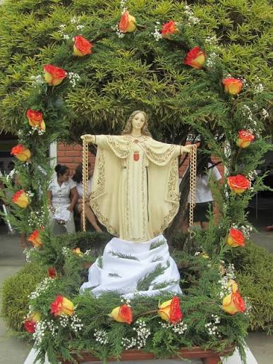

El CETPRO “Santa María de la Merced”, tiene sus raíces en 1962, empezó como academia de Corte y Confección labores, arte culinario, primeros auxilios y mecanografía, ubicado en la calle Mariscal Ureta (hoy telefónica),siendo directora la Hna Carmen Luz Peralta de la congregación La Inmaculada. Surgió esta academia como entidad particular con el objetivo de servir a la colectividad dentro de la directiva de la oficina del servicio social de La Inmaculada, apoyada por el Rvdo P. Alfonso Arana Vidal, en aquel entonces párroco de la provincia de Jaén.
En 1968 se hicieron los trámites de reconocimiento oficial ante el Ministerio de Educación, concediendo este pedido a la Academia Inmaculada de Corte y Confección, y demás cursos programados con la RM N° 3639. Desde marzo de 1972, la academia “La Inmaculada” es dirigida por las hnas Mercedarias Misioneras de Bérriz, asumiendo la dirección hna Felisa Mendivil.
En 1976, la institución pasa a funcionar en calle Diego Palomino (hoy Obispado). En 1977, asume la dirección Hna Martina Aguirrezabala Bengoechea (MMB). Por gestiones de las hermanas Mercedarias pasa a denominarse CENECAPE “Santa María de la Merced”. En 1978, con RM N° 0022 pasa de CENECAPE “SMM” a Centro de Educación Ocupacional (CEO) “Santa María de la Merced”. La Hna Martina Aguirrezabala impulsó la gestión ante el Vicariato Apostólico “SJT” y Manos Unidas de España, para la construcción del local en el sector de Morro Solar (1989 - 1990), teniendo el aporte valioso de los padres de familia y estudiantes.
La hna Juana Martín (MMB) trabajó como docente y directora. En 1990, hna Estefanía Martín Calvarro (Fami) MMB, asume la dirección del CEO “SMM”, religiosa muy comprometida con la formación integral de los estudiantes, especialmente con la promoción de la mujer y comunidad en general. La Hna Teresa Abad (MMB), quien trabajó como docente, acompañando a los estudiantes en la formación de su fe.
El 27/06 de 2006, con RDR N° 2565, se da la conversión a Centro de Educación Técnico Productiva (CETPRO) “Santa María de la Merced” para ofertar el ciclo básico, siendo directora en ese entonces Hna Estefanía (Fami) de feliz trayectoria por su extraordinario aporte y servicio a la formación integral de los estudiantes y comunidad en general.
Desde 2007 al 2010, asume la dirección el Prof. Ranulfo Guerrero Toro a propuesta de las hnas MMB. Desde marzo 2011 al 02 marzo de 2015, la dirección estuvo a cargo de Prof. Marcela Pérez Díaz (MMB). Cuya gestión se caracterizó por el fortalecimiento académico, el acompañamiento y crecimiento personal de los estudiantes.
En Marzo 2015 - 2018, es encargada la dirección el Prof. Hugo Aguinaga Díaz. De enero a mayo 2019, la dirección es encargada a la Prof. Fabiana y Prof. Ranulfo. En junio 2019 al 02 de marzo de 2020, la dirección es encargada al Mg. José Chasillo Fernández y desde 03/03/2020 a la actualidad la dirección es encargada al Prof. Edi Alberto Cruz Gálvez.

Formar técnicos productivos, emprendedores con espíritu liberador en un ambiente acogedor y trabajo en equipo, capaces de dar solución a sus problemas y tomar decisiones para mejorar su calidad de vida, contribuyendo en el desarrollo sostenible local y regional.
Ser una institución licenciada, protagonista en formación técnica productiva, desde la praxis de una educación integral liberadora, acorde con el avance de la ciencia y tecnología.
Educar en la dignidad humana
Educar en la capacidad de criterio
Educar en la justicia